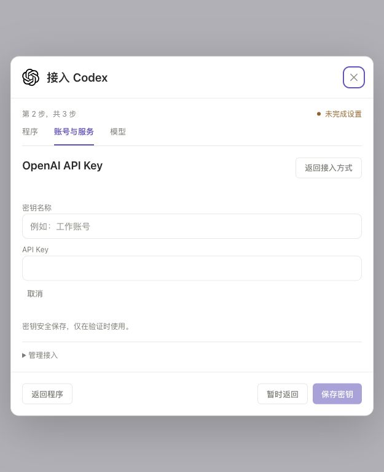
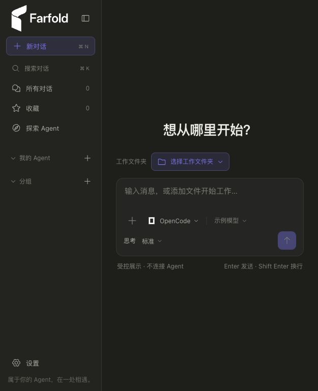
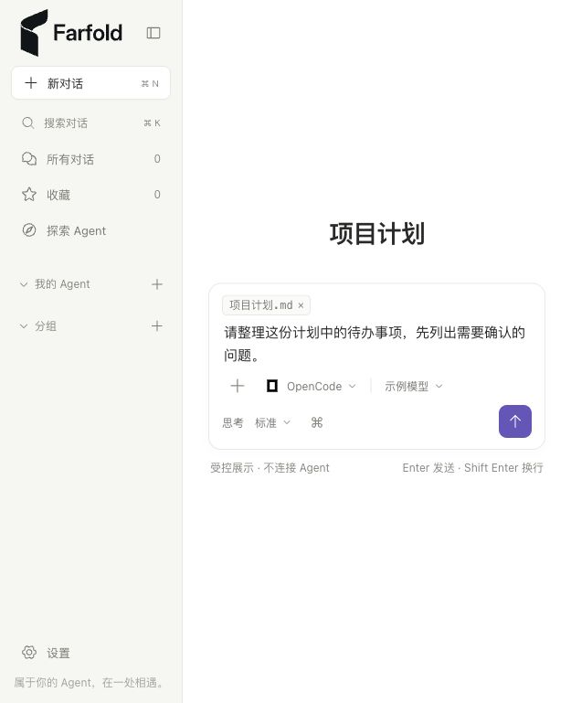
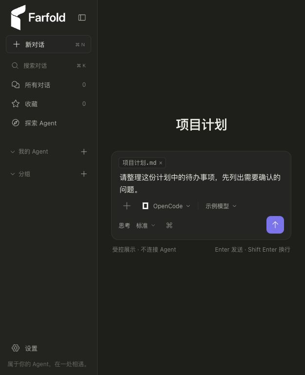
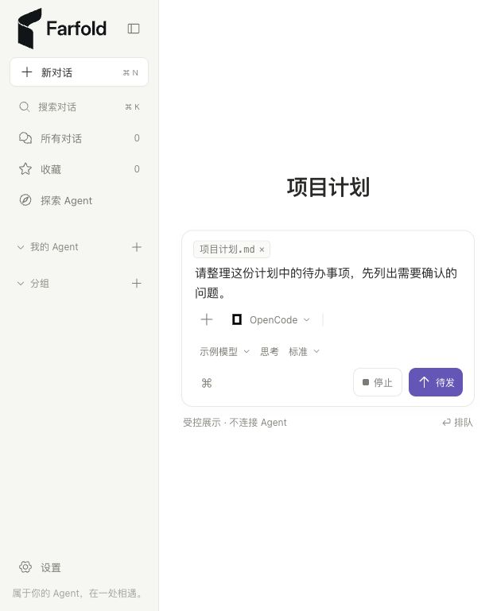
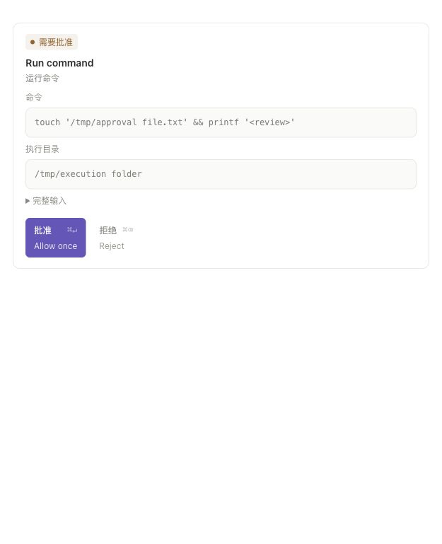
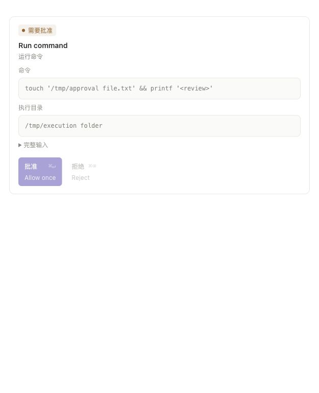
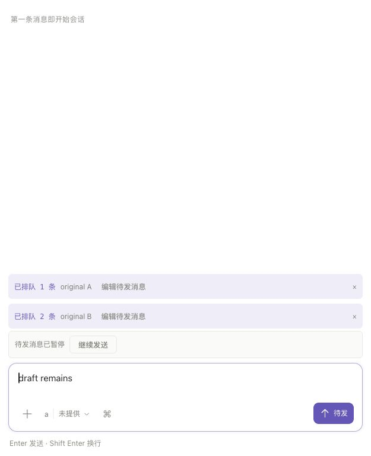
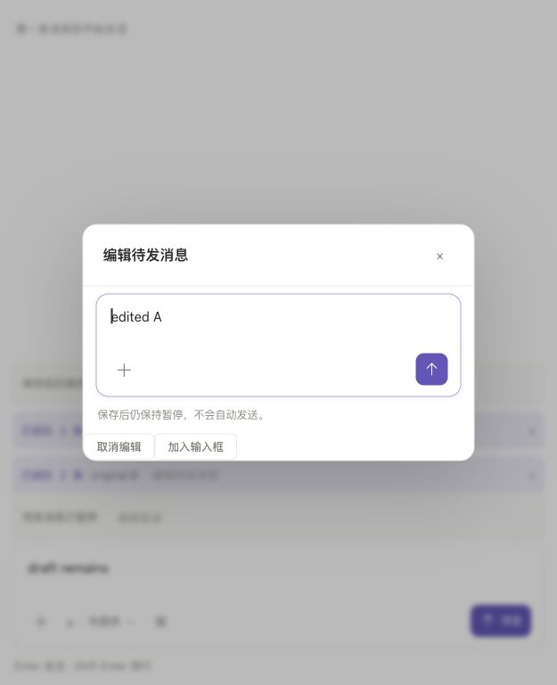
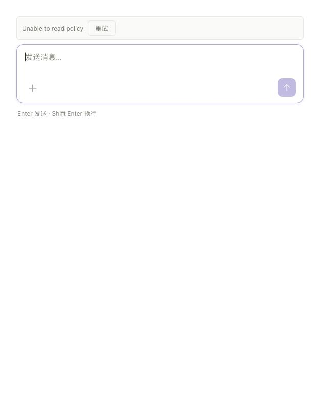

UI/UX复核：隐私发布版
2026-10-08历史材料，2026-10-24整理入库。原324文件保持本地原件；本次不重新执行历史测试，不升级其功能验收结论。
范围说明 · 全部原件、排除理由与哈希 · 机器清单
报告
受控组件图（34张）
合成数据、无真实Agent调用，仅证明当时组件呈现；不属于正式安装或真实工作验收。图片与原件字节相同，未打码、未重绘。
agent-setup--01-account-key · 合成AXagent-setup--02-terminal-api · 合成AXagent-setup--03-three-methods · 合成AXagent-setup--04-account-summary · 合成AXagent-setup--05-terminal-summary · 合成AXagent-setup--06-service-step · 合成AXagent-setup--07-service-summary · 合成AXagent-setup--08-model-step · 合成AXagent-setup--09-model-selected · 合成AXagent-setup--10-program-list · 合成AXagent-setup--11-program-connected · 合成AXagent-setup--12-service-editing · 合成AXagent-setup--13-single-terminal · 合成AX
agent-setup--14-key-detail · 合成AXagent-setup--15-api-old-auth · 合成AXagent-setup--16-program-ready · 合成AXagent-setup--17-program-missing · 合成AXcomposer--01-start-light · 合成AX
composer--02-start-dark · 合成AX
composer--03-thread-light · 合成AX
composer--04-thread-dark · 合成AX
composer--05-running-light · 合成AX
states--01-approval-pending · 合成AX
states--02-approval-stop-waiting · 合成AXstates--03-question-pending · 合成AXstates--04-question-uncertain · 合成AX
states--05-queue-paused · 合成AX
states--06-queue-editing · 合成AXstates--07-stop-unknown · 合成AX
states--08-work-read-error · 合成AXstates--09-diff-fragment · 合成AXstates--10-diff-split · 合成AXstates--11-media-collapsed · 合成AXstates--12-media-expanded · 合成AX 实拍与标注图
103张实拍、标注和画册预览未入库：其界面包含或可能关联真实历史对话、本机路径或私人上下文。原件全部留在本地；报告保留当时的成功、失败、未知和覆盖边界。需核原图时使用原件清单定位，不能把未发布图当作公开可复核图。